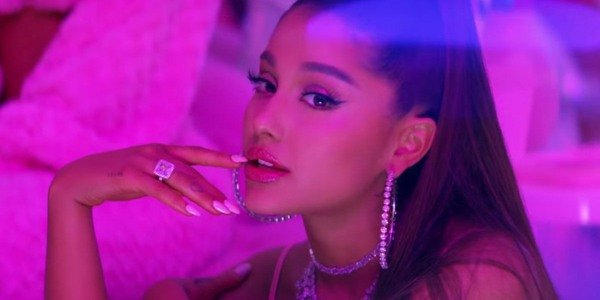

Here we are in 2020, and pop music has taken a huge shift. Darker more alternative music has become mainstream that blends both catchy choruses, dance beats, and powerful electronic synths. Here is some of the most popular pop music today, and the a artists who are dominating the charts:
Top Album:
WHEN WE ALL FALL ASLEEP, WHERE DO WE GO? - Billie Eilish
This 17-year-old is changing the game. Opposite to many other young aspiring musicians, Billie has managed to find her place in the music industry in her own times. Her album that she co-wrote and recorded with her brother in their parents’ house, scored five Grammys this year. Billie swept all major four categories at the award ceremony for her dark, honest, and masterfully made second debut album.
Top Songs:
"Say So", "Got To Town", and "Candy" - Doja Cat
This is a hot take, I will admit, but anyone who has listened to “Say So” recently can attest that it is a disco dream. This perfect blend of dance and pop has skyrocketed Doja Cat to the top of charts while also highlighting some of her other iconic older hits like “Go To Town” and “Candy”. At a time when most of the songs on the radio are darker, Doja throws some neon pink into the world and tells people that there’s “No Punches Left to roll with“ in her psychedelic and contemporary pop music.
Top Artist:
Ariana Grande

This power vocalist has gone through some immense trauma in front of the public eye, but has battled through the hardships and came out souring releasing not one but two albums in the past two years. Ariana Grande’s raw vocal ability proves her to be one of the best live singers in the industry sitting next to those like Celine Dion and Mariah Carey. Should she release another album soon? Probably not. Girl, take a break. Nevertheless, her fans are always hungry for more, and she's bound to serve with whatever music she puts out into the world.